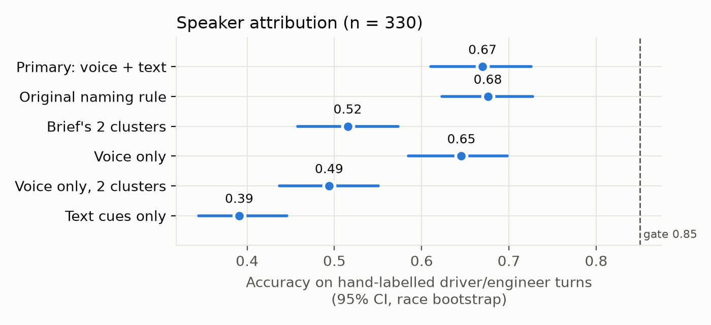
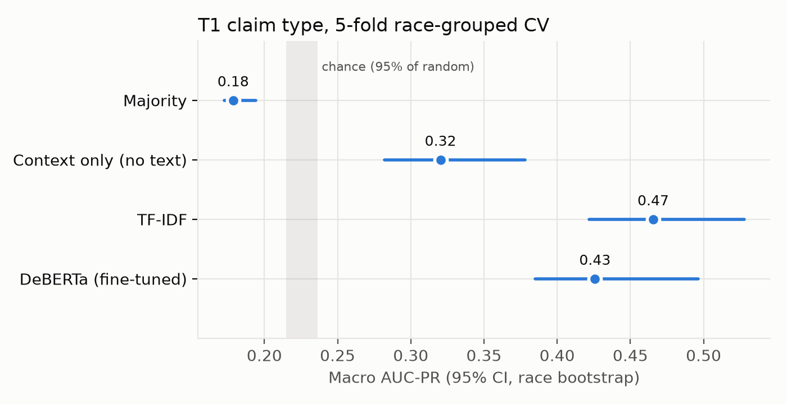
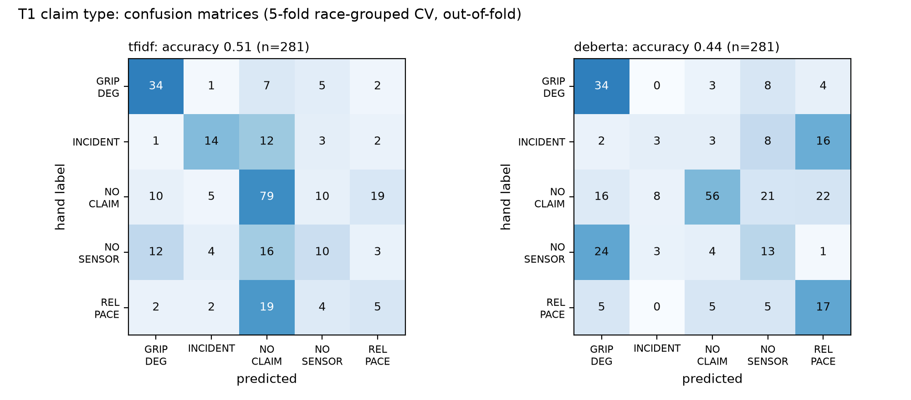
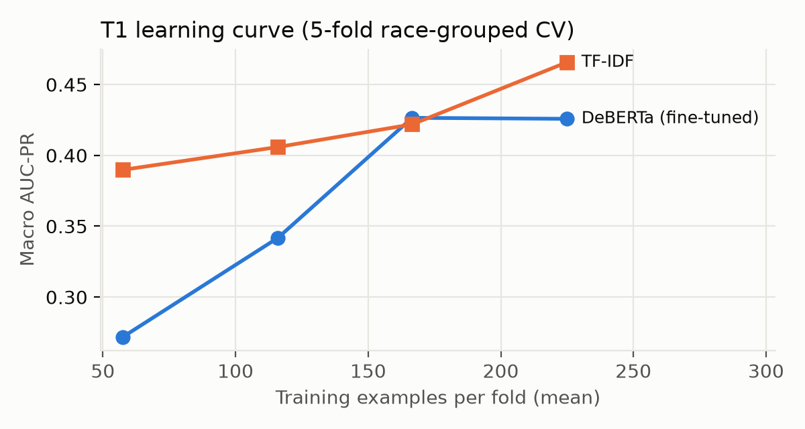
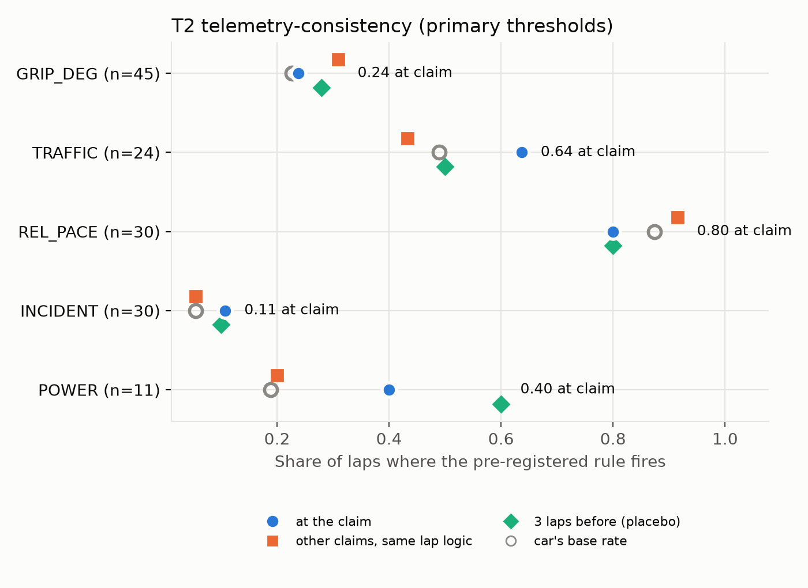
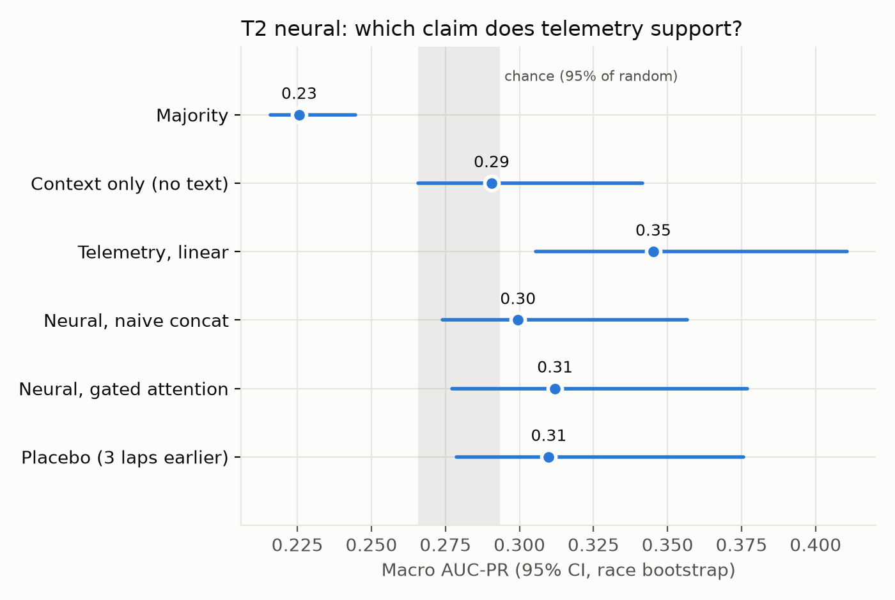
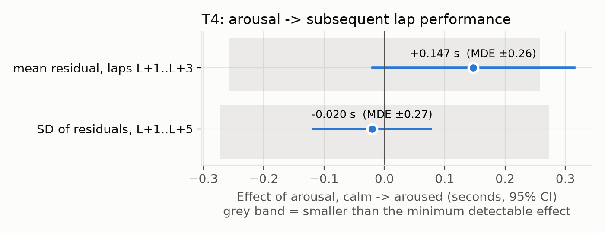

NLP + Deep Learning project
Understanding Formula 1 team radio, and checking it against telemetry
Example: “No grip at the rear!” → driver → GRIP_DEG → were the lap times actually dropping? → was the voice raised?
Word error rate on 41 hand-transcribed clips (859 words)
Verdict: weak. Whisper is adapted by prompting only, never fine-tuned, and the WER check says the prompt isn't worth re-running.

Failed its gate → downstream uses only human-verified driver turns

| Split | DeBERTa | TF-IDF | Context | Chance95 |
|---|---|---|---|---|
| Race-grouped 5-fold CV | 0.43 | 0.47 | 0.32 | 0.24 |
| Validation 2024 | 0.48 | 0.46 | 0.29 | 0.35 |
| Test 2025 (used once) | 0.47 | 0.39 | 0.28 | 0.42 |
| Leave-one-driver-out | 0.48 | 0.45 | – | 0.25 |
DeBERTa beats context-only by +0.11 (CI +0.04 to +0.18)
Holds on unseen drivers, so it learned claim language, not driver identity. Fine-tuned DeBERTa and TF-IDF are comparable at ~250 training examples. A local LLM zero-shot (Qwen2.5-1.5B, no training) scores 0.63.
Claim type, macro AUC-PR (same 281 items; chance 0.21)
Qwen2.5-1.5B-Instruct, run locally, sees only the category definitions from our annotation guide, with no labels and one prompt never tuned. With ~250 labels, stating what a category means beats learning it from examples.


Macro AUC-PR, race-grouped CV; chance ≈ 0.34

The placebo shows the broadcast picks eventful moments; that's not the driver's foresight


Null: effects under ~0.26 s/lap can't be detected with these data
Next: a second annotator, more rare-claim labels, and supervised attribution trained on our hand labels